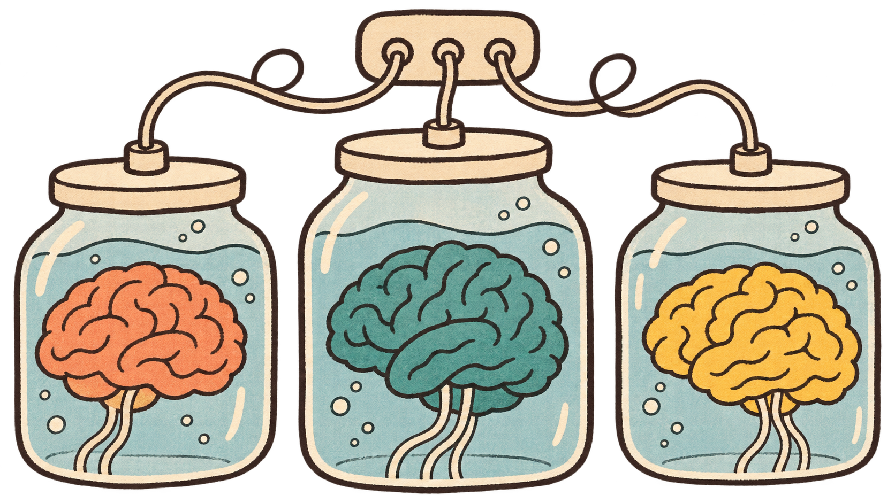
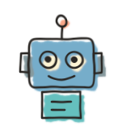
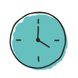

Three Big Brains
Use an ensemble of different LLMs to supercharge your factory’s feedback loop.

This is recorded and will be posted publicly.
Keep your camera off, or use chat, if you'd rather not appear.
Coming up
2 Dec

WorkshopBuild Your Own Coding AgentMatt Wynne + Steven Diamante
3 Dec
Free clinicAgentic Coding ClinicMatt Wynne + Jeremy Lightsmith
12 Jan

Cohort courseBuild a Software FactoryMatt Wynne, Aldric Giacomoni + David Laing
A factory needs a feedback loop
Work → check → improve → repeat
Don’t get Claude to mark Claude’s homework
A separate session helps; the same model may still share blind spots.
Give the validator a different model
Claude writes · Codex checks
Ask three different models
Synthesizer ↩ doer when the plan needs work
Three reviews take more work
More model calls

Time to combine the reviews
Access to other providers
Use this where another perspective is worth the effort.
Review before a plan becomes code
Catch a concern while the plan is still easy to change.
Demo
Questions
What would you want to do next with this?
Coming up
2 Dec
WorkshopBuild Your Own Coding AgentMatt Wynne + Steven Diamante
3 Dec
Free clinicAgentic Coding ClinicMatt Wynne + Jeremy Lightsmith
12 Jan
Cohort courseBuild a Software FactoryMatt Wynne, Aldric Giacomoni + David Laing